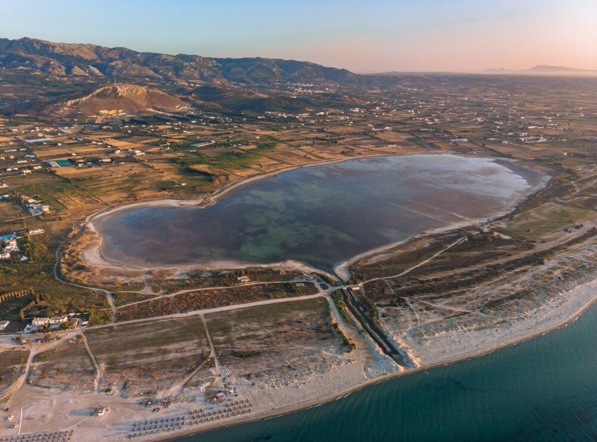
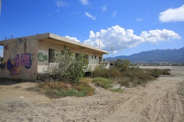

Zoutmeer & flamingo’s (Tigaki)
Oude zoutpannen bij Tigaki – witte zoutlaag in de zomer, flamingo’s (vaak wit) en beschermd natuurgebied. Let op: geen ijsbaan voor auto’s.
Zoutpannen van Tigaki
De zoutmeren liggen bij Tigaki. Eeuwenlang won men hier zeezout: zeewater in bassins, zon verdampte het water. Tussen 1944 en 1987 zo’n 900–3500 ton per jaar; in 1989 gestopt. Oude gebouwen en pompen staan er nog. Nu beschermd natuurgebied.
Flamingo’s en dieren
Je kunt flamingo’s, waterschildpadden en waterslangen spotten. De flamingo’s zijn hier vaak wit, niet roze – er zijn geen garnalen die het roze pigment leveren.
Zomer: “ijsbaan”
In de zomer droogt het meer op; er blijft een dikke witte zoutlaag achter, alsof het bevroren is. Let op: het is niet stevig genoeg voor auto’s. Elk jaar raken voertuigen vast in de modder onder de zoutlaag.
 Zoutmeer
Zoutmeer

Zoutmeer
Zoutmeer Zoutmeer
Zoutmeer
Bezoeken
Bij Tigaki. Gratis wandelen of fietsen; blijf van de zoutkorst af met de auto.